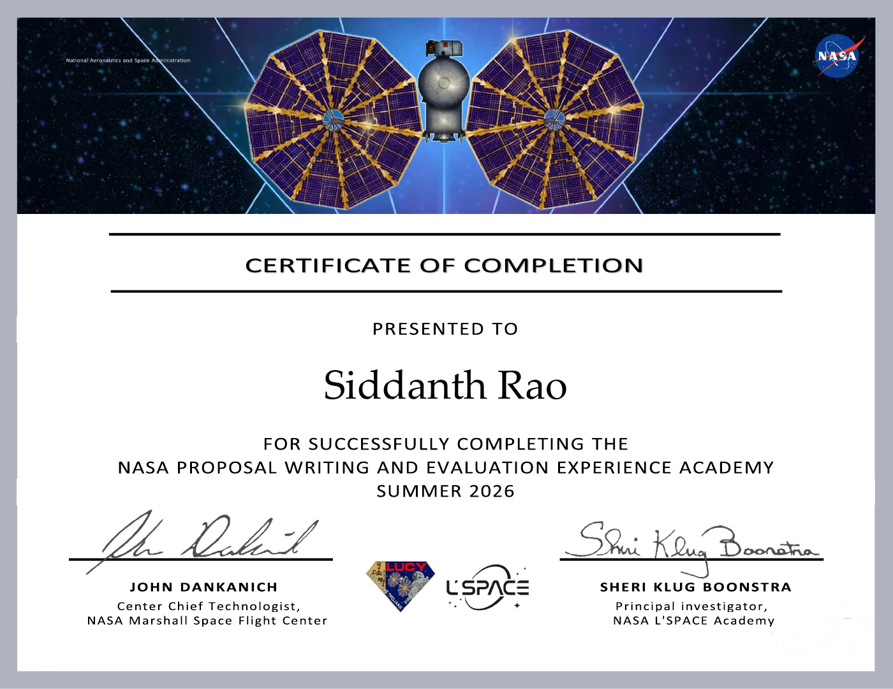

NASA L’SPACE NPWEE
NASA L’SPACE NPWEE
Materials evaluation and technical proposal development for a cryogenic propellant-storage concept.
Project overview
Respond to a NASA Marshall Space Flight Center mission need with a multidisciplinary cryogenic propellant-storage technology proposal.
My contributions
Conducted a materials trade study covering cryogenic compatibility, thermal performance, density, structural properties, and manufacturability. Authored the materials section and presented findings to the team and review panel.
Design decision
Compared aluminum alloys, copper, and stainless steel; selected 6061 aluminum for the prototype concept.
Outcome
The team proposal ranked in the Top 6 of 32 and was rated selectable by NASA Marshall Space Flight Center. Separately, I served as a solicitation review panel chair, following formal review protocols and documenting strengths and weaknesses.
Certificate of completion
